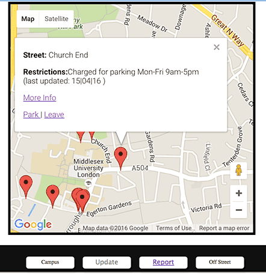
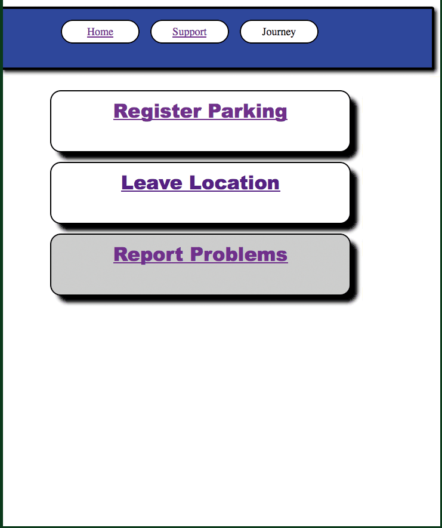

How the app works
The Mobile application uses googlemaps to access geographic features around the campus. Each parking location is identified by the red marker which is clickable
Markers
Each Marker represents a locatation of parking bays. To find out more information you can click on the markers to provide information. The information provides parking times, type of bay. Alongside these details there is also an show info link to provide more information about the parking facilities.
Contribute Crowd data and improve system
If you decide to park or you intend to leave the location, please notify us by clicking the links at the bottom of the infowindow. This will allow us to update the system on available parking locations. You can do this automatically if you registered use of location services. However you can do this manually
Issues
You can complain about any issues by using the report button on main screen